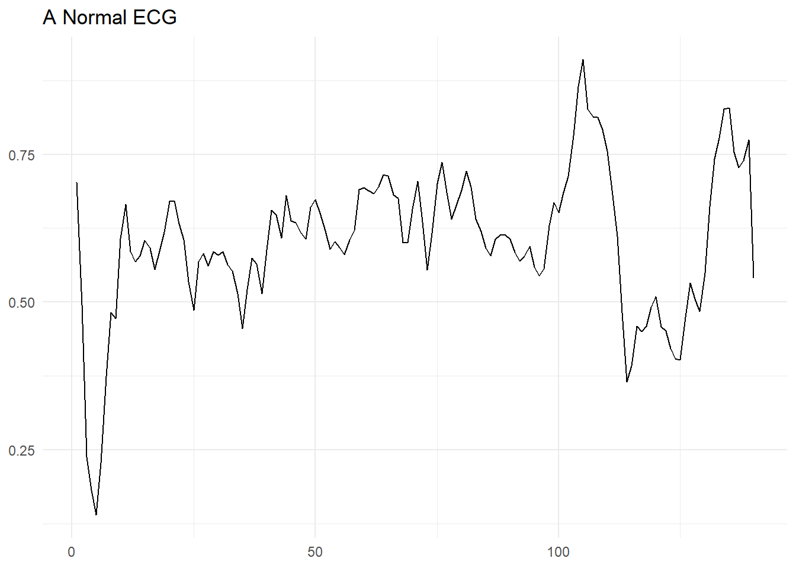
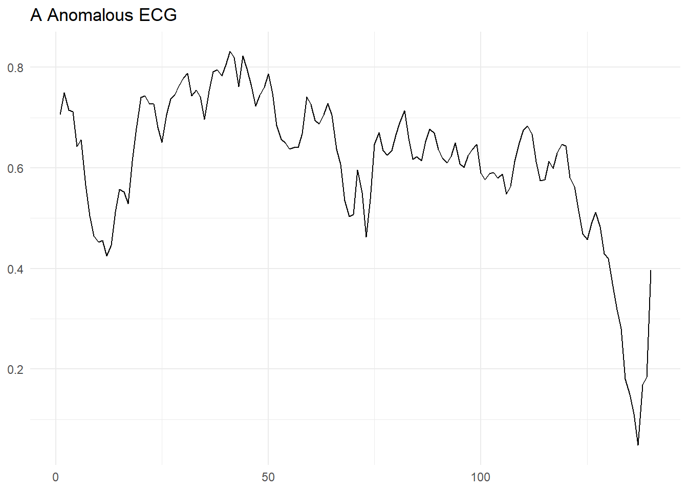

Functional Auto Encoder with R Keras
code
tensorflow
tidymodels
Objective
This is a somewhat simple post trying to mimic the guides on auto encoders present in Third example: Anomaly detection
Libraries
Do keep in mind that in order to use tensorflow you should run
tensorflow::install_tensorflow()Download The Dataset
Code
dataframe <- readr::read_csv('http://storage.googleapis.com/download.tensorflow.org/data/ecg.csv',col_names = FALSE)Rows: 4998 Columns: 141
── Column specification ────────────────────────────────────────────────────────
Delimiter: ","
dbl (141): X1, X2, X3, X4, X5, X6, X7, X8, X9, X10, X11, X12, X13, X14, X15,...
ℹ Use `spec()` to retrieve the full column specification for this data.
ℹ Specify the column types or set `show_col_types = FALSE` to quiet this message.Code
dataframe |> head()Code
raw_data <- dataframePreprocessing
Split the data
Code
set.seed(20)
raw_data_split <- initial_split(raw_data,prop = .8)
train_data <- training(raw_data_split)
test_data <- testing(raw_data_split)Normalize the data to [0,1].
Code
target_varible <- raw_data[,ncol(raw_data)] |> names()
recipe_data <- recipe(train_data) |>
update_role(target_varible,new_role = 'outcome') |>
update_role(-target_varible,new_role = 'predictor') |>
step_range(all_predictors(),min = 0,max = 1)Note: Using an external vector in selections is ambiguous.
ℹ Use `all_of(target_varible)` instead of `target_varible` to silence this message.
ℹ See <https://tidyselect.r-lib.org/reference/faq-external-vector.html>.
This message is displayed once per session.Separate datasets for future usage
You will train the autoencoder using only the normal rhythms
Which are labeled in this dataset as 1.
Separate the normal rhythms from the abnormal rhythms.
Code
See the data
Normal ECG
Code
# Plot a normal ECG.
normal_train_data |>
head(1) |>
pivot_longer(-target_varible) |>
mutate(name = name |> stringr::str_extract('\\d+') |> as.numeric()) |>
ggplot(aes(x = name,y = value)) +
geom_line() +
theme_minimal() +
labs(title = 'A Normal ECG',x = NULL,y = NULL)
Anomalous ECG
Code
anomalous_train_data |>
head(1) |>
pivot_longer(-target_varible) |>
mutate(name = name |> stringr::str_extract('\\d+') |> as.numeric()) |>
ggplot(aes(x = name,y = value)) +
geom_line() +
theme_minimal() +
labs(title = 'A Anomalous ECG',x = NULL,y = NULL)
Create Matrixes for tensorflow
Code
normal_train_data_x <- normal_train_data |>
select(-target_varible) |>
as.matrix()
normal_test_data_x <- normal_test_data |>
select(-target_varible) |>
as.matrix()
test_data_x <- baked_test_data |>
select(-target_varible) |>
as.matrix()
anomalous_test_data_x <- anomalous_test_data |>
select(-target_varible) |>
as.matrix()Build The Auto Encoder- Using the functional api
Discover the input and output dimensions
Define the encoder
Code
#|warning: false
encoder_input <- layer_input(shape = c(dim_features), name = "features")Loaded Tensorflow version 2.9.2Code
encoder_output <- encoder_input |>
layer_dense(32,activation = "relu") |>
layer_dense(16,activation = "relu") |>
layer_dense(latent_dim,activation = "relu")
encoder <- keras_model(encoder_input, encoder_output, name = "encoder")
encoderModel: "encoder"
________________________________________________________________________________
Layer (type) Output Shape Param #
================================================================================
features (InputLayer) [(None, 140)] 0
dense_2 (Dense) (None, 32) 4512
dense_1 (Dense) (None, 16) 528
dense (Dense) (None, 8) 136
================================================================================
Total params: 5,176
Trainable params: 5,176
Non-trainable params: 0
________________________________________________________________________________Define Decoder
Code
decoder_input <- layer_input(shape = c(latent_dim), name = "latent_dim")
decoder_output <- decoder_input |>
layer_dense(16,activation = "relu") |>
layer_dense(32,activation = "relu") |>
layer_dense(dim_features,activation = "sigmoid")
decoder <- keras_model(decoder_input, decoder_output, name = "decoder")
decoderModel: "decoder"
________________________________________________________________________________
Layer (type) Output Shape Param #
================================================================================
latent_dim (InputLayer) [(None, 8)] 0
dense_5 (Dense) (None, 16) 144
dense_4 (Dense) (None, 32) 544
dense_3 (Dense) (None, 140) 4620
================================================================================
Total params: 5,308
Trainable params: 5,308
Non-trainable params: 0
________________________________________________________________________________Define The Auto Encoder
Code
encoded <- encoder(encoder_input)
decoded <- decoder(encoded)
autoencoder <- keras_model(encoder_input, decoded,
name = "autoencoder")
autoencoderModel: "autoencoder"
________________________________________________________________________________
Layer (type) Output Shape Param #
================================================================================
features (InputLayer) [(None, 140)] 0
encoder (Functional) (None, 8) 5176
decoder (Functional) (None, 140) 5308
================================================================================
Total params: 10,484
Trainable params: 10,484
Non-trainable params: 0
________________________________________________________________________________